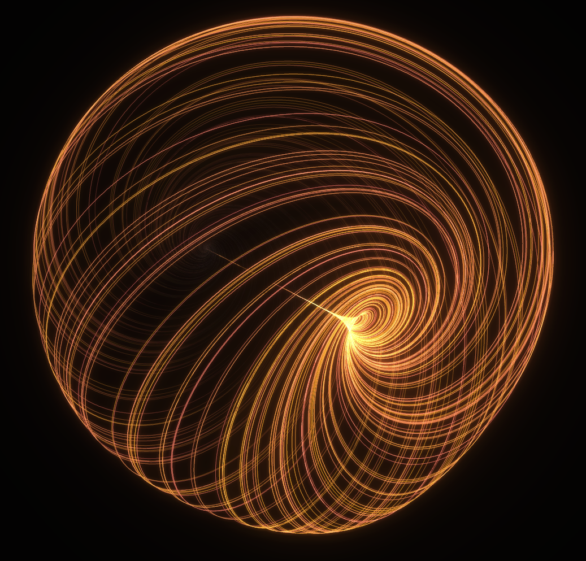

Zensical is a new static site generator implemented in Python that heard mentioned on the Talk Python to Me podcast. The website features a stunning mathematical visualisation that I was able to extract into a GitHub pages website. The parameters involved in the differential equation can be modified and the default flythrough effect can be interrupted to allow zooming/panning/rotating to explore the geometry.